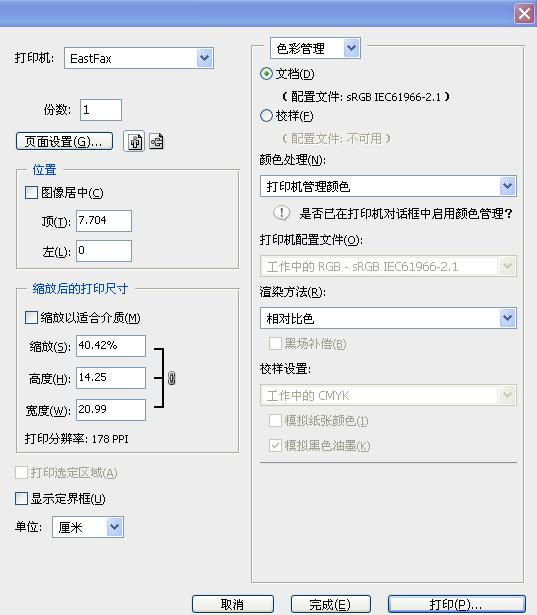
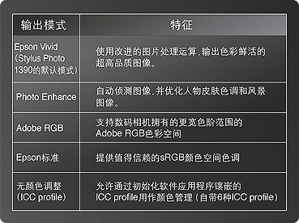

|
第五章：回家后的简单图片处理
第三节：照片的输出
摄影是为了记录事物。显示器一关两眼一抹黑，什么都没了。照片是最好的记录，拿在手上看才是硬道理，那感觉是完全不一样的，实打实的爽。
1，传统胶片的冲扩
以前旅游都是带回一大堆胶卷送到冲印店，第二天取照片。这种得到照片的方式没啥好说的，因为控制权都在店家手里，我们唯一能做的就是找一家装修较好的冲印店然后祈祷。不知道店家用的是不是正品药水啊，本来额定冲100卷的药水可能冲了200卷啊，新来的伙计不带手套直接用手抓底片啊。。。等等等等。我有很多次在店里生闷气，因为底片被严重划伤。还有比我更不走运的，底片冲坏了，店家只赔等量胶卷。
遂有大侠一气之下亲自在家里冲底片，自己夺取控制权。这当然很好，但有很多技术困难要克服：药水难买，开封后的药水难保存，冲洗中的温度难控制。现在八百万像素相机只卖八百元，山寨版五百万像素的只要三百多元，几百元的手机照相也像模像样。长此以往，估计到2015年厂商可能会停止生产胶卷。在2015年之前，对旅游坚持拍摄胶卷的大侠，我有如下建议：
a，
在机场火车站安检时不要将胶卷过机检查，可满脸堆笑地要求手检，或购买防辐射的胶卷专用袋，特别是对ISO400以上的高速胶卷；
b，不要在旅游景点购买和冲洗胶卷；
c，尽量寻找能吊挂冲洗负片的大型店家；
d，绝对避免强光照射底片，最好有专用的防潮箱保管，顶不济也要放在书架里面。避免强光照射包括尽量减少用幻灯机播放反转片（正片）；
e，尽量少用重要底片扩印照片，要以数码方式处理底片，也就是用底片扫描仪以最大解像度把底片扫描成电子文档(JPEG压缩比10或无压缩的tiff格式
存储)，再按数码照片处理。
2，数码照片的扩印和打印
如果家里没有喷墨打印机，那就只能去（网上）冲印店洗数码照片了。喷墨打印机现在卖成了白菜价，所以严重推荐大家自己动手打印照片。自己控制从按快门到出照片的全过程是很爽的，这也是数码摄影的优点之一，我们对绝对权利有很强的欲望。
喷墨打印机不但价格越来越低，而且打印质量也超过了传统的光学扩印，八个墨盒以上的高档照片打印机其色域之广甚至超过了普通显示器，打印的照片在室内
能保持200年不褪色，远远超过了传统光学扩印。去各大影展转转就知道，绝大部分摄影师都已抛弃传统扩印，改用打印机制作照片了。
多少钱的打印机适合打照片呢？首先强调一点，对照片打印来说，打印纸第一重要，墨水第二重要，打印机排第三。it's all about
paper.
理论上来说最便宜的四色喷墨打印机（三百多元）只要用好的照片纸也能打出不错的效果。到底用什么照片纸好？一般来说越贵的越好（废话）。HP和EPSON原装纸都还不错。还有一些不知名品牌的进口天价打印纸，据说比EPSON原装纸还好。这是可能的，Cucci和LV只是普通高端品牌，地球上最顶级的手袋对大多数人来说连名字都没听说过，也从不在百货公司卖。具体到纸质，我本人偏向没有反光的亚光纸（matt
paper），高光纸（glossy paper）出大照片看着晃眼睛。
需要注意的是，一旦换用不同的打印纸/墨水，同一张图片打印出来照片会有很大差别。一般推荐先输出小图片，然后对照显示器调整色彩等参数，再次打印输出再调整，直到出现你要的效果，此时就可以输出大照片了。
我们的相机和镜头投资成千上万，买个一千多元的照片打印机当不为过，如1400元的爱普生Epson
270六色打印机（六个墨盒），出片效果不会比冲印店差，最大可打A4尺寸的照片。如果你需要A3或者19寸的大照片，可考虑爱普生Epson
1390，价格不超过2900元。佳能和HP的六色打印机也不错。对于超级发烧友/影楼，打印量很大或经常打印A3或19寸以上大照片的，建议购买售价一万多元的EPSON4880（可打24寸照片）或者售价两万多的EPSON7880（可打36寸巨型照片），
佳能和HP的类似产品也差不多，这些大型打印机用的是220毫升大墨盒，综合算起来比用小墨盒的小机器要节省三分之一或更多墨水钱。
顺便说说，喷墨打印机的档次是按墨盒的多少来区分的（除了按价钱和大小区分之外）。专业照片打印机是七个墨盒起步，八个墨盒的中等专业，十个的更好，最好还有12个墨盒的，说不定厂家过几年会弄出十七八个墨盒的怪物出来。
目前打印照片唯一的问题是耗材成本太高。若使用优质无酸照片纸和原装墨盒制作美术馆收藏级的照片，我们没法做到传统光学扩印的成本。但话说回来，如果不要求200年的存放时间，不对颜色极端要求的话，完全可以使用国产照片纸和替代墨水，做到比传统光学扩印还便宜。但代用墨水（外接连供）使用不当容易造成喷头堵塞。喷头非常贵，占打印机价格的三分之一还多，而且使用代用墨水等于放弃机器保修。
喷墨打印机有个大缺点，长期闲置容易堵塞喷头，所以就算没东西打也建议每三天启动一次打一张测试页，疏通打印管道。激光打印机就没有这种问题。但目前彩色激光打印机打照片还是不行。
开始打印之前，首先要校准显示器（请先阅读第一节：色彩空间概述和显示器快速校准）。色彩管理可以使打印和显示的颜色更为统一，建议打印输出的图片在RAW转换中选用16位(
16 bit Adobe RGB)色彩，而只是显示用则选8位sRGB。但不论怎么调整，打印出来的照片一般没有显示器上看那么光彩夺目，因为显示器是自发光而照片纸是反射光。
打印机的具体设置不好说，因为打印机自带软件各不相同。Photoshop和打印机自带软件都能进行颜色管理，但要关闭其中一个，调另外一个。如果两个都调，一个正一个反，那颜色永远也调不对。色彩空间要保持一致，尽量减少转换，如果在拍照时选Adobe
RGB，那就从拍摄、后期处理到打印全部执行Adobe RGB色彩空间。下图是Photoshop的打印界面。

点击打印之后，程序就会启动打印机管理界面，点击某台打印机的“属性”就会看到一系列打印参数。我通常关闭所有颜色增强设置，尽量以自然的方式打印。当然你也可以选择照片增强输出模式（Photo
Enhance），多试试，看哪个你最喜欢。打印解像度方面，现在好点的照片打印机都能以2880dpi打印，但这种高解像度打印速度很慢，一张18寸照片有时要20分钟。我个人没觉得2880dpi和1440dpi差别很大。

EPSON1390打印机的输出模式
一般打印推荐打开图片原图，让打印软件自动缩放（以适应打印纸大小）。关于图片文件大小，一般7寸照片有两百万像素就能够精致打印了，12寸(A4)照片需要六百万像素，18寸（A3）照片需要一千万像素。所谓精致打印就是要经得起拿在手上仔细端详，但超过18寸的大照片很少会拿在手上看，展出都是隔着一段距离看。普通电影胶片解像度最多相当于一千万像素，放大到一面墙大的银幕，也没见谁抱怨颗粒太粗。
最后提一下小型热升华照片打印机。
热升华的打印效果比喷墨还是差点，但这小机器有的不到一公斤重，有的内置电池，方便随时随地打印。如果你自驾车去遥远山区旅游，某些山民可能一辈子都没照过像，你能随时打印一张照片给他，这是很好的沟通，也免去了邮寄照片的麻烦，值得推荐。
|